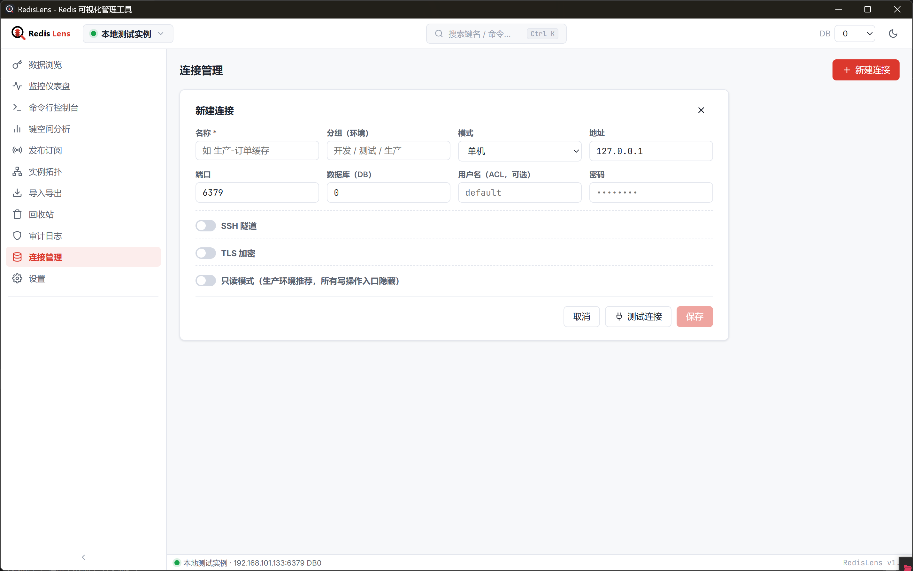

安装与首次连接
从 GitHub Releases 获取 RedisLens，完成安装并连接第一个 Redis 实例。 如果你只想知道怎么最快跑起来，跟着本页的三步走即可。
系统要求
| 项目 | 要求 | 说明 |
|---|---|---|
| 操作系统 | Windows 10 / 11（x64） | 当前发布产物为 windows/amd64。 |
| WebView2 | Microsoft Edge WebView2 Runtime | Windows 10 / 11 通常已内置；缺失时界面无法启动，可安装 Evergreen Runtime。 |
| Redis | 4.0 – 7.x | 推荐 5.0 及以上。低版本缺少 SCAN TYPE 或分段 INFO 时会自动降级。 |
| RedisJSON | 可选 | 只有查看 / 编辑 JSON 类型时才需要服务端加载 RedisJSON 模块。 |
| 磁盘与权限 | 可写用户配置目录 | 配置、密钥、审计日志写入 %APPDATA%\RedisLens；SSH 私钥与 TLS 证书需可读。 |
无需服务端组件
RedisLens 是纯客户端桌面应用，不需要在 Redis 服务器上安装 Agent、插件或额外服务。
下载与安装
打开 GitHub Releases
下载最新版本。每次 v* 标签发布都会提供两个产物：
| 文件 | 类型 | 适合场景 |
|---|---|---|
RedisLens-amd64-installer.exe |
NSIS 安装包（推荐） | 需要开始菜单入口、标准安装 / 卸载流程的日常使用。 |
RedisLens.exe |
便携版 | 免安装运行、放在 U 盘或受控目录中，适合临时排障。 |
安装步骤
-
运行安装包
双击
RedisLens-amd64-installer.exe，按向导选择安装目录并完成安装。 如果 Windows 提示未知发布者，请先确认文件来自本仓库的 Releases 页面，再选择继续。 - 启动应用 从开始菜单或桌面快捷方式启动 RedisLens。首次启动会创建配置目录并展示欢迎页。
-
（可选）使用便携版
直接双击
RedisLens.exe。便携版不写注册表、不创建开始菜单项，但配置仍保存在%APPDATA%\RedisLens，与安装版共用。
升级
安装新版安装包会覆盖程序文件，已有连接与设置保留；便携版直接替换 exe 即可。
升级前建议备份 %APPDATA%\RedisLens 目录。
首次启动与数据目录
首次启动时，RedisLens 在用户配置目录下创建自己的工作区。Windows 上即
%APPDATA%\RedisLens（通常是
C:\Users\<用户名>\AppData\Roaming\RedisLens）。
| 路径 | 内容 | 说明 |
|---|---|---|
config.json |
连接列表与全局设置 | 密码等机密字段以 AESGCM1: 前缀的密文保存，不存明文。 |
key.bin |
32 字节随机主密钥 | 用于派生 AES-256 密钥，与机器标识共同绑定，文件权限仅当前用户可读。 |
audit\audit-YYYY-MM.jsonl |
月度审计日志 | 每行一条 JSON；启动时清理超过 90 天的文件。 |
logs\redislens.log |
本地运行日志 | 默认开启，包含连接重连等诊断信息，不记录密码或键值；可在设置中关闭。 |
复制配置目录不等于可迁移凭据
主密钥通过 HKDF 与当前机器的 Machine GUID 绑定。把 config.json 与
key.bin 复制到另一台机器后，密码无法解密，需要重新输入。
详见 安全与审计 · 凭据加密。
创建第一个连接

- 打开连接管理 点击顶部实例切换器，选择「管理连接…」；或点击左侧导航的「连接管理」。
- 新建连接 点击「新建连接」，填写名称（必填）与分组（如「开发」「测试」「生产」）。
-
填写实例信息
模式保持「单机」，地址
127.0.0.1，端口6379，数据库0。 如果 Redis 启用了 ACL 或密码，填写用户名 / 密码；密码留空表示无密码。 - 测试连接 点击「测试连接」。成功时会显示 Redis 版本、角色、模式、内存占用与键总数； 失败时显示具体错误，便于先修正配置再保存。
- 保存并连接 点击「保存」，回到列表后点击该连接的「连接」。连接成功后会自动跳转到数据浏览页。
默认值
端口默认 6379，DB 默认 0，模式默认单机；名称是唯一必填项。
同一实例可以登记多条连接（例如只读与可写各一条）。
连接状态与常用入口
连接列表和顶部状态栏共享同一套健康状态：
| 状态 | 显示 | 含义 |
|---|---|---|
| 已连接 | ● ok | PING 正常，可按当前配置读写。 |
| 连接中 | ● connecting | 首次打开或重连过程中。 |
| 断线 | ● down | 心跳失败，后台正在按退避策略重连。 |
| 未连接 | ● closed | 连接未打开，功能页不可用。 |
- 打开连接后，应用每 5 秒 PING 一次；断线时按退避间隔重试，最多 30 次，之后需手动重新连接。
- 打开连接会同时启动监控采样（默认每 10 秒读取一次
INFO）。 - 顶部可切换实例与 DB（0 – 15）；集群模式固定 DB 0。
- 右侧状态栏显示
实例名 · host:port DBn · 模式 · 只读，可随时确认当前操作目标。
生产环境请先开启只读模式
新建连接时开启「只读模式」后，写操作入口会被隐藏，后端也会拒绝写命令。
确认目标实例无误后，再编辑连接关闭只读。